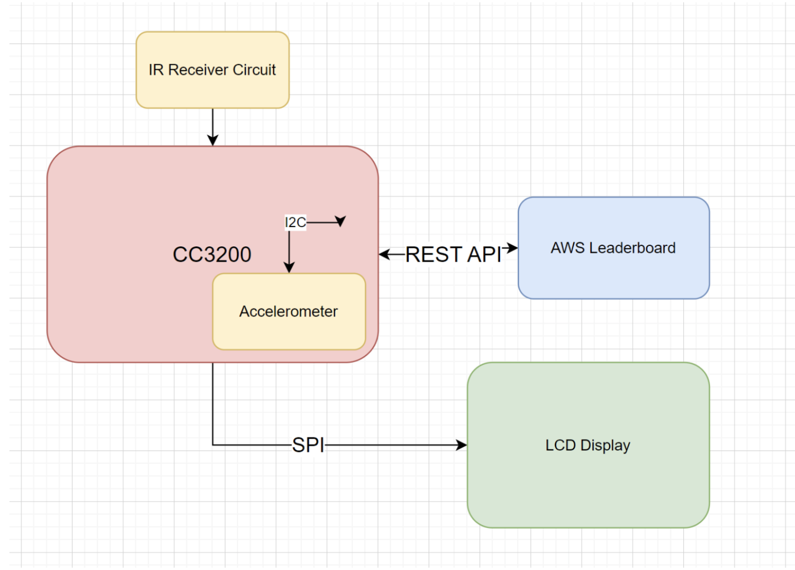
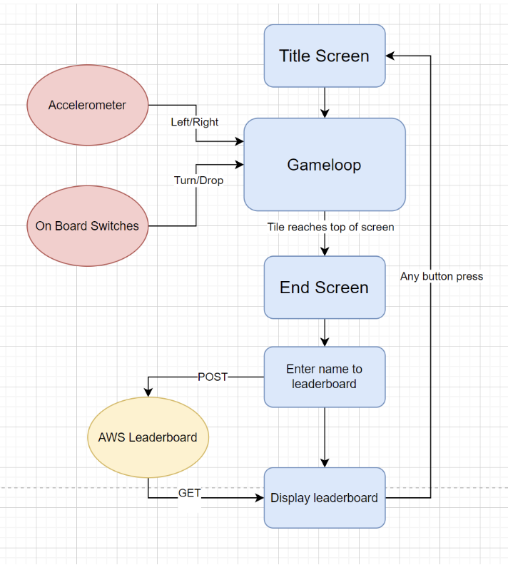

Design
Project Description
test
Tiltris is a spin-off of the popular single-player game Tetris where players manipulate blocks as they fall to create complete rows, which then disappear, earning points and making room for more blocks. Our version, Tiltris, utilizes the accelerometer on the CC3200 to enable tilt controls that allow the user to move the block horizontally. To rotate the Tetris block, the user can use buttons on the board. The game uses the LCD screen using SPI to display the game. We use an AWS web service to store a leaderboard of players with the most points. We also use an IR receiver to allow the user to type in their name for the leaderboard.
System Architecture
This diagram shows how we designed the system for our game to be played on. As is shown, we have an IR reciever that takes in input from the TV remote. Also, we use an I2C connection to the CC3200's built in accelerometer to get data what direction and how much the user tilts the device laterally. In addition, we utilize an SPI connection to the LCD display to display the game. To implement the leaderboard, we used a REST API to connect to our AWS thing where we store and update a json that represents the leaderboard.

Game Design
Tiltris is a puzzle game where different shapes continuously fall from the top of the screen and build up on the bottom. The game takes place on a 10x20 grid. Pieces are steered into place by tilting the board side to side, the vertical speed can also be influenced by tilting the board forward and back. When a line is filled completely, it is cleared away and points are scored. For each 5 lines cleared, the game's level will rise and the speed of the falling pieces will increase. When the pieces reach the top of the board, the game ends.
Besides the accelerometer controls, the player can rotate the current piece using the board's top button. One feature present in newer Tetris titles, but not the NES version, brought into Tiltris is the held piece feature, which allows the player to swap their current piece with a stored held piece by pressing the board's second button. This allows the player to avoid unwanted shapes and fix mistakes, and helps the game feel less frustrating as players may struggle with the unfamiliar tilt controls. Along with a display showing which shape will come next, the player has the ability to plan their shape placement carefully.
The game begins on the title screen where players can choose between "EASY", "MED", and "HARD" difficulties by tilting the board. The difficulty controls the starting level of the game, influencing the speed of the blocks as well as the points earned during play. During gameplay, the player continuously steers pieces within the gameboard and attempts to score as many points as possible without becoming overwhelmed. After the game ends, a leaderboard of top scores retrieved from AWS will be displayed, and the player will be able to enter a name up to 6 characters long and store it using a universal TV remote and the multitap typing system. Characters are typed using number buttons 2-0, can be deleted using the VOL- button, and finally the player can submit their entry with the MUTE button. Once submitted, the score will be uploaded to AWS and the game will restart to the title screen.
Scoring:
Scoring for Tiltris follows the NES Tetris formula, which is based on the number of lines cleared at once as well as the current level and works as follows:
- 1 Line: 40 points x Level
- 2 Lines: 100 points x Level
- 3 Lines: 300 points x Level
- 4 Lines: 1200 points x Level
Clearing many lines at once is highly incentivized by this system, although this strategy makes the game much more challenging. Along with rewarding players for reaching high levels, this adds a feeling of risk versus reward to the game.
New pieces for the player to place are chosen randomly from the 7 different shape types, or Tetronimos. These shapes are the Line, Square, T-block, Z-block, S-block, and the L-block and reverse L-block. Every shape is made up of 4 individual blocks in different arrangements.

Implementation Details
Game loop:
Game updates are scheduled using the board's Systick module, which updates several times a second regardless of whatever the board is currently processing. This allows the game to have a consistent update speed regardless of the time it takes to calculate game updates or draw graphics to the screen. The updates can also be paused, allowing for long animations to be displayed without queueing game updates. The game logic runs under a large while block, which continuously handles queued updates, including reading the accelerometer, moving the current piece laterally and downwards, rotating the current piece, and swapping with the held piece.
Interrupts must not directly affect the state of the game as they happen at unpredictable times and may change the state while the main execution is using it. Interrupts also must not make any drawing calls, as the OLED has an internal cursor which could be lost if a drawing operation is interrupted with another. Instead, interrupts from Systick or from the board's switches set flags which will be acted upon at the appropriate time by the game loop. Interrupts from the button also make use of a cooldown counter, since we noticed that button presses incorrectly caused multiple input events often.
Game board:
The game board, which is a 10x20 grid, was implemented in code with a 2D integer array representing the board's rows and columns. Empty squares are stored in this array as 0's, filled squares contain some number >0 corresponding to their display type (filled, hollow, etc.). This system allows us to easily check if squares are empty or not and records the type of block to graphically display in each square. When lines become full and are cleared, each line copies from the appropriate line above to give the appearance that the pieces are falling to the bottom.
Although one array is enough to simulate the game's logic, a second array is kept throughout the game loop. This array tracks the previous state of the game board, so that when the game board is changed we can draw only the updates and not waste time drawing blocks already on the screen.
Collision:
Collision between the current piece and other shapes on the game board needs to be checked anytime the current piece moves side to side, downwards, or is rotated. The current shape is temporarily removed from the board during this check so that it does not collide with itself. Then, each position indicated by the piece's offsets and its new row and column on the board is checked to see if it is currently occupied or is outside the bounds of the board. If there is a collision with a wall, the movement is simply cancelled. If there is a collision with a piece or with the floor, a countdown begins. Once this countdown ends, collision is checked again, and if the piece is still in contact then it is locked into place and the next shape. This countdown mechanic makes the game more forgiving and allows the player to slide pieces into gaps they otherwise would not be able to reach.
Controlled Piece:
The main piece, or current piece, is the piece that the player actively controls as it falls down the board. This piece's position is represented in code by two things: a row/column coordinate for its center point, and an array of offsets from that point which describe the shape. For example, the T-piece would have the offsets:
During rotation, each offset is adjusted such that they are rotated 90 degrees around the center point:
The current shape can then be drawn onto the board by adding these offsets with the shape's current row and column coordinate.
Leaderboard:
The leaderboard is implemented using the REST API interface we developed during lab. When the board boots, it retrieves the current leaderboard from the AWS IoT shadow using a GET request. Then, it parses the JSON leaderboard and extracts the top 5 scores. These are displayed once the game has ended. At this screen, the user can type using the remote and IR receiver.
Graphics:
The OLED display used for this project was a major bottleneck, as communication through SPI is very slow compared to the resolution of the screen, only capable of drawing a few complete frames per second. A typical computer display uses a frame buffer to hide in-progress frames until the frame has been completed, then draws completed frames all at once. In contrast, pixels drawn onto the OLED are displayed immediately and will be displayed until another color is drawn over them. This means that drawing large portions of the screen at once will cause a visible tear as rows of pixels are drawn one by one down the screen.
A benefit of persistent screen storage is that we can avoid drawing the entire screen after each game update, instead drawing only the differences between the previous and new game states. As the board often only changes very slightly as the pieces fall down the screen, most of the time we only need to draw a few dozen pixels.
Palettes:
The colors of the blocks and title screen are stored as indices into an array of colors which serves as our palette. Because we store a 2-bit index rather than a 16-bit color value, we reduced the data size of our graphics significantly. Additionally, we can control the graphics of the game very fluidly by changing the colors in our palette, which enables several special graphical effects including fades to black, palette swaps between levels, and flashing animations.
Drawing Blocks:
The most important part of the game, the blocks making up the Tetronimos are defined by 2D 6x6 integer arrays containing indices to a palette as shown:
6x6 blocks are the largest block that can fit in the screen's 128 vertical pixels, as the gameboard has 20 rows. In the NES version, they are 8x8, so the styles had to be slightly adjusted to fit this smaller size. Many drawing functions provided in class use to draw each pixel one at a time, sending the coordinates first then sending the color data. This is wasteful, as it means we need to send more than twice as many commands per pixel drawn. Instead, we first message the OLED that we will be drawing to a 6x6 area, then iterate over the array and send the color data based on the index in the palette. A future optimization could be to avoid drawing the black pixels, only drawing the interior areas, although there are circumstances when we change the palette and the black pixels do need to be drawn.
After each game update, such as when the current piece changes position, we redraw only the difference between the new and previous board's blocks. This means rather than drawing 10x20 blocks, we usually only draw 1 or 2, keeping the framerate high. We can also use this system to flash blocks that are cleared or when the current piece is locked into place, by quickly alternating the palette between all white colors and all black before finally updating the game board.
Title Screen:
The title screen for the game is a slightly modified version of the title screen from the Gameboy release of Tetris. The text was changed to say "Tiltris" and the width was reduced to 128 pixels. We chose to use this title screen as the Gameboy system also utilized a 4-color palette, so we would not need to perform any quantization of the image before loading it into our game.
To save the image within our code, we created a simple Python script that reads an image, gets the index of each pixel into a palette, and bit packs that 2-bit index into a 32-bit integer. The completed image representation is a 2D integer array with 95 rows of 8 integers each. The script prints this array with all of the necessary braces and commas such that it can be directly copied into our game's C code, and read during execution.
Color Depth:
The SSD1351 has both an 18-bit and 16-bit color mode. Although the 18-bit color mode has four times as many colors available, it requires sending three data bytes per pixel, rather than two, increasing the cost of drawing each pixel by 50%. Thus, decided to stick to the 16-bit color mode, which uses the RGB 5-6-5 layout of bits. The human eye is most sensitive to green, which is why green is given the extra bit.
Challenges
Rotation:
Rotation introduced a lot of bugs, and was overall tricky to implement. Although the offset system made it simple in theory to implement rotation, figuring out how the operations necessary to rotate a coordinate 90$^\circ$ was not straightforward. After several attempts, including swapping X and Y coordinates, negating X and Y, and other strategies, we settled on using a direct mapping between any point in a 3x3 grid and its rotated counterpart. This solution is a bit ugly, and wastes some memory, but it works every time for the use cases needed in this game which are almost exclusively shapes in a 3x3 grid.
Checking collision for rotation was also difficult, as we wanted to reuse the collision checking we had created for the piece lateral and vertical movement. This function however involved removing and adding the current shape to the game board, so that it doesn't collide with itself, however when the shape is rotated during this check there were often floating pieces left behind, or the player would be able to delete pieces already on the board by rotating quickly next to them. This was solved by writing a seperate collision check, which was much more careful about removing pieces from the board and did not add anything until it was sure to be in the correct position.
The interrupt handler receiving inputs from the GPIO pin connected to the board's switch would also sometimes cause problems, as one button press often generated many interrupts, causing the rotation to be hard to control. The solution was to add a button cooldown, which disables any input from the button for a fraction of a second. This prevents accidental inputs, but still allows the user to rapidly rotate the piece.
JSON Parsing:
To make use of the REST API and connect the board to AWS, we need to send and receive values as strings in JSON format. Although JSON format is simple, C has very few string functions built in compared to other languages and does not have a simple to use JSON library built in.
Future Work
Randomization:
The randomization of the pieces is very rudimentary, relying on the C library function rand(), which is notoriously unbalanced. This system likely results in more of some shape types than others, although we have not gathered data on this. Some Tetris versions implement a "bag" system in which the game creates a set of shapes, usually something like 5 of each, to draw from for each new shape. Then, shapes are refilled such that the least drawn shapes are more likely to be picked. Additionally, a counter prevents the same shape from being chosen 4 or more times in a row. This more complex system is less random, but creates a more fair playing experience and prevents situations where the player is forced to make suboptimal plays. In fact, within a truly random distribution there exist some sequences of shapes that guarantee a game over even for a perfect player. Implementing a bag system, shape counter, or both would improve the game feel greatly.
Leaderboard:
The current leaderboard is very rudimentary, and has several main drawbacks. First, because the leaderboard is only retrieved once at board start up, games played one after another will not see their score displayed on the final leaderboard, although it will be tracked in the AWS shadow. An improvement could be either retrieving the leaderboard every restart, although this is slow, or dynamically storing new values in the board's local leaderboard after each game which would be preferable.
Also, because the leaderboard uses simple key-value pairs linking names to scores, any name can only have one score associated with it, new scores submitted under that name will overwrite the older one. A solution could be having a set number of leaderboard places, and writing name-value pairs into those slots. Another solution could be attaching a timestamp or other identifier to each new score submitted, so that an arbitrary number of entries could be stored.
Although the leaderboard displayed on the board is limited to only a few entries due to the small screen, a web version of the leaderboard could display as many entries as we want. A web integration could be a neat addition, and strengthen the IoT aspect of the game.
Additional Game Modes:
The current version has only one game mode- survive as long as you can. NES Tetris includes a second game mode, which is more puzzle-like where the player has to clear 25 lines, and there are obstacle lines pre-placed on the bottom of the board when the game starts. Other ideas include time attack, where the player tries to get as many points as possible within a certain time limit. 2-player Tetris could be either direct board to board communication, where players can send obstacles and other hazards to each other by scoring points, or where players take turns playing and try to get the higher score. Any additional game modes would add value and interest to the game, and would not take too long as they would be able to reuse most of the systems we have already created.